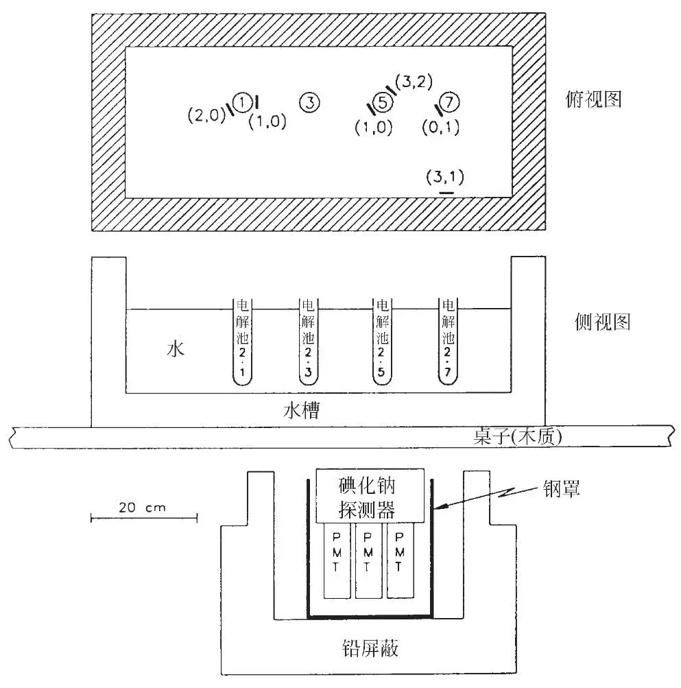
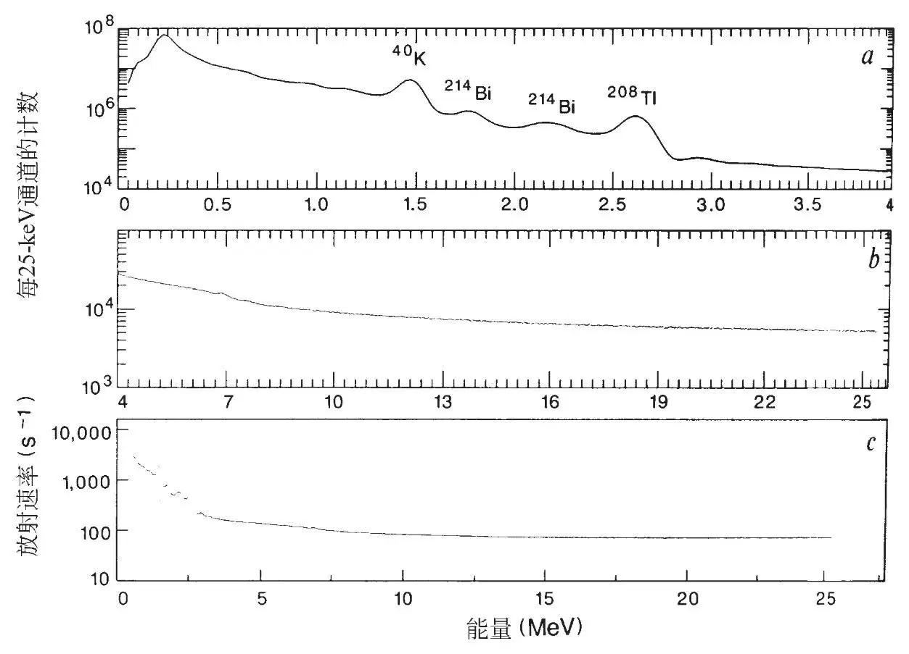
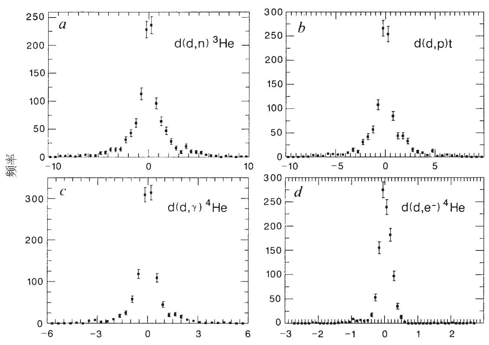
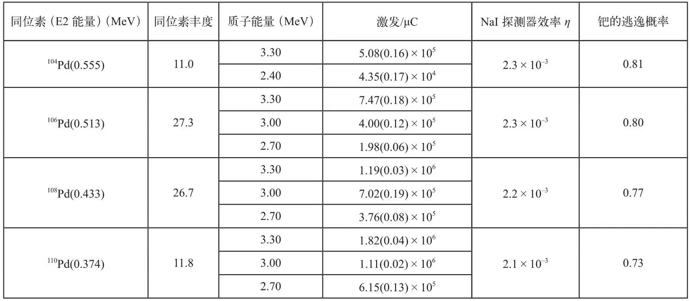
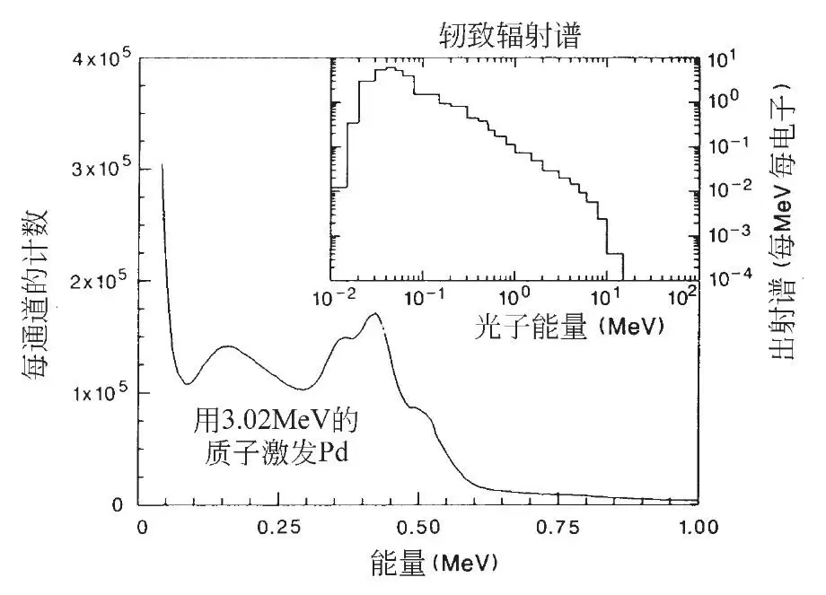
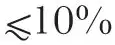
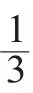
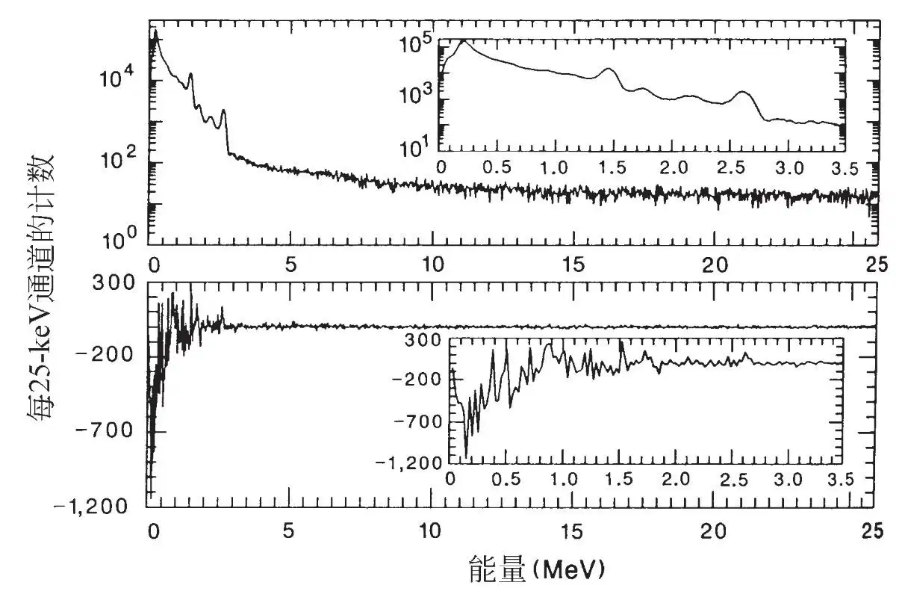

英文
英文萨拉蒙等
编者按
全世界进行了许多实验来研究马丁·弗莱施曼和斯坦利·庞斯所声称的已在1989年利用台式电解实现了核聚变的断言，这篇文章中所报道的内容则提供了一些最具说服力的反面结果。迈克尔·萨拉蒙是与庞斯同一所学校（犹他大学）的物理学家，他得到了庞斯的允许，使用同一装置重复了那些实验。在彻底的尝试之后，萨拉蒙的团队没有找到“冷核聚变”的证据。庞斯声称在断电妨碍了计算机收集数据之后，确实有过剩热量产生。这一说法只会增加大家对最初断言的怀疑。这些实验曾一度为萨拉蒙招致诉讼威胁。 英文
犹他大学庞斯的实验室通过NaI探测器对庞斯和弗莱施曼使用的冷核聚变电解池放射出的γ射线进行了五个星期近乎连续的记录。已知的聚变反应的功率上限是10–12~10–6 W，在这个功率限制之上没有观察到任何聚变活动的证据。此外，中子径迹探测器表明，在67小时内，从其中任何一个冷核聚变电解池中发射出来的中子总数上限约为每秒一个中子。 英文
庞斯和弗莱施曼[1]宣称在含有钯阴极和D2O电解质（含0.1 M LiOD）的电解池中实现了氘核的“冷核聚变”，该反应产生了数量级为几瓦的过剩热量。他们的结论是基于以下理由得出的：缺乏已知的电化学机制来解释热量过剩以及略微高于本底的γ射线和中子的放射。上述数据的后者已经遭到批判[2-4]，尽管存在大量的负面结果[4]，但是在类似的电解池中产生氚的报告[5]和一些实验室[6]中电解池输入功率和输出功率之间的差异仍然使得这场论战得以持续。 英文
已知的d+d和d+p反应和它们的能量产率（Q）为[7]：d(d, p)t(Q = 4.03 MeV)；d(d, n)3He (Q = 3.27 MeV)；d(d, γ)4He (Q = 23.85 MeV)；d(d, e–)4He（内转换）(Q = 23.85 MeV)；d(p, γ)3He (Q = 5.49 MeV)。 英文
在最初的声明发表之后数周，庞斯允许我们进入他的实验室，对从他运行的电解池中放射的所有辐射进行独立的测量。我们使用的是即时可用装置，将一个铅屏蔽的碘化钠（NaI）探测器（8 in×4 in）安装在他的电解池下方（图1），并在五周内几乎连续地对能量范围在0.1~25.5 MeV之内的γ射线进行了数据收集。此外，还将几个中子探测器放置在水槽中，与电解池相邻，它们对大约3天的时间段内的中子流进行了累计；这些中子探测器由夹在核径迹探测塑料薄膜之间的235U箔组成。 英文

图1．电解池和NaI探测器布局的侧视图，以及相应位置（粗线部分）的可探测中子的三明治结构的电解池俯视图。电解池2-1，2-5和2-7的钯阴极直径/长度（以厘米为单位）分别为0.4/1.25、0.4/10.0和0.1/10.0；电解池2-3有尺寸为0.1/10.0的铂阴极。俯视图中每一个三明治结构显示的两个数字（n，m）分别是没有镉覆盖层和有镉覆盖层的铀箔塑料薄膜中记录的裂变碎片数目。只分析每个箔中的一个塑料薄膜。 英文
γ射线的NaI探测
让四个开放的电解池（不进行气体收集）近乎连续地进行电解，同时NaI探测器在收集数据（5月9日至6月16日）。这些电解池由D2O（0.1 M LiOD）电解质和铂阳极构成；阴极如图1所示。电解池在恒电流模式下运行，电流设定值在五周内是变动的。 英文
NaI探测器系统被放置于支撑水槽和电解池的桌子下方，这样就不会对庞斯实验室里的其他研究活动形成干扰。电解池中产生的任何γ射线在被8 in×4 in的NaI探测器探测到以前，都会先通过水、水槽和桌子。在光电峰中对γ射线进行探测的与能量有关的绝对效率（与在闪烁体中γ射线完全的能量转换相对应）可在一个独立实验室中用标准γ射线源进行确认，该独立实验室中可对水、水槽、桌子和探测器进行同样的配置和任意的去除。下面给出的辐射限是基于放置在电解池2-1处的源的绝对效率得到的。 英文
将通过脉冲高度分析仪累积的γ谱数据在五周的观察时间内每隔半小时或者1小时（活时间）连续地下载到一台微机上，从而将瞬态信号的本底累积效应降至最低。设定了系统的增益以使0.1~25.5 MeV能量区间内的γ射线可以被记录下来。仪器运行785小时所得到的累积γ谱如图2a和2b所示。 英文

图2．a和b, 785小时的活时间收集的累积γ射线谱。主要的本底峰为40K（1.4608 MeV）、214Bi（1.7645 MeV）和208Tl（2.6146 MeV），而一个约0.23 MeV处的背散射峰和一个约2.17 MeV处的宽峰源自214Bi的两个峰（2.1186 MeV和2.2042 MeV）。探测器能量分辨率由R = 0.07E–1/2(1+1.3/E)1/2给出，E的单位为MeV，式中的主导因素是探测器的最优分辨率，附加的因素是由于脉冲高度分析仪的模数转换器的电荷积分输入存在噪音而导致的。系统电子部件的积分非线性在0.1~3.5 MeV的区间内小于0.1%，在整个0.1~25.5 MeV区间为0.2%。对系统增益变化（比如由于光电流漂移）的监测表明，在整个五周的时间内，变化小于3.5%，而在任何24小时区间内，变化小于0.5%；c，在0.1~25.5 MeV的范围内，对全体γ射线进行搜寻得到的γ射线源的放射速率限值与能量的关系（见正文部分）。在这些限值以内的信号被漏记的概率小于10–3。 英文
逐条γ谱（1,116条）、逐段时间（每一段活时间积分的时长为0.5或1小时，活时间共计831.0小时）地寻找瞬时高于本底的γ射线信号。每条γ谱的本底要用若干（10~50）条连续的本底γ谱取平均而得到一个合成γ谱来求得，然后，从原始的γ谱中扣去此本底而得到“剩余谱”。对于每条γ谱进行这一扣除后就得到1,116条剩余谱。于是，在小于10~50小时内任何瞬时的异常信号都会在剩余谱中以零点附近一片泊松涨落之上的正剩余的形式显示出来。持续时间更长的信号还可以通过对合成γ谱的集合进行相似的操作来寻找，而且其灵敏度还更高些。 英文
为了能够对探测器系统的增益和消隐脉冲电平（对应于能量为零的脉冲高度分析仪的通道）的短暂变化进行校正，通过把每一个单独的γ谱对γ射线本底进行拟合的方法来对增益和消隐脉冲电平进行确定。然后在扣除本底之前，所有的γ谱被重新调节到通常具有零偏置的增益水平，这样可以减小剩余γ谱中由增益或零点漂移或者两者兼而有之所带来的伪差。 英文
中子流的限值：d(d,n)3He 来自核聚变通道d(d,n)3He的中子具有2.45 MeV的初始动能和在水中4.9 cm的平均自由程，由于中子热化，它的自由程会缩减为0.4 cm。由于每一个电解池都被数英寸的水浴包围，大多数放射出的中子会在周围的水浴中热化并通过n(p, d)γ反应产生2.22 MeV的γ射线；蒙特卡洛计算表明，对位于2-1电解池处的2.45 MeV的点中子源而言，62%放射出的中子会被水浴中的氢捕获。通过一个Am-Be中子源测得，绝对的光电峰探测效率（对2-1电解池）为3.0×10–3。 英文
通过对2.0~2.4 MeV能量区间的剩余γ谱进行高斯拟合（以2.2 MeV为中心能量，方差由探测器分辨率确定），每一个剩余γ谱中都可以观察到一个位于2.2 MeV处的高于本底的γ射线信号。拟合幅值的频数分布以pW为核聚变功率的单位，如图3a所示。在这1,114个γ谱中，拟合出的最大幅值为10 pW。在这个分布（以及后面其他的分布）中我们排除了两个图谱，因为它们含有来自22Na和137Cs源的光电峰，这是由于其他人将这两种放射源带入实验室造成的。 英文

图3．对四个d + d核聚变反应估算的速率。对于数据采集区间持续0.5~1小时的1,114条γ射线谱中的每一条，从信号中减去平均化的本底γ谱可以得到一条剩余γ谱。通过调节每一个反应的已知形式的γ射线谱的比例，对每一个剩余光谱进行拟合；拟合得到的数量级可以为正也可以为负。这里的图是所有1,114条γ谱的柱状图。在a和b中，速率以聚变的功率为单位（a: pW；b: mW）；c和d中，反应速率为通常使用的单位（c: s–1；d: 103 s–1）。每一个图中，柱状图大致呈现为零点附近的高斯分布，表明对于任何一个核聚变反应没有可测量的速率。 英文
质子流的限值：d(d, p)t 核聚变通道d(d, p)t (Q = 4.03 MeV)是冷核聚变过程的一个最有可能的反应，这既是因为有过量氚产生的报告[5]，也是因为它的反应产物被固定在了钯电极中（3 MeV的质子在钯中的范围约为30 μm；参考文献8），因此有可能避免“产生了瓦特量级的聚变功率却没有观察到粒子发射”的佯谬。事实上，一个强而明显的γ射线特征存在于这一反应中：3.02 MeV的质子导致钯同位素偶–偶核的库仑激发，退激发时它辐射出的0.37 MeV到0.56 MeV之间的辐射可以被NaI探测器以表1中给出的效率η探测到。这个表由参考文献9改编而来，列出了每一种钯同位素的E2（电四极）γ射线的能量和100%同位素富集的样品的厚靶辐射产额（每微库仑质子的激发量），同时还假设了电解池2-1为源的光电峰探测效率，并考虑到在钯阴极内部E2 γ射线吸收的修正因子。图4显示了一个从暴露在源自范德格拉夫加速器的3.02 MeV质子束中的3 mm的天然钯靶所放射出的NaIγ射线谱（希尔，个人交流）。在0.37 MeV、0.43 MeV和0.51 MeV处观察到了峰值，并且与预期的强度一致。 英文
表1. 3 MeV的质子在钯电极中的辐射产额


图4．来自钯同位素的电四极（E2）γ射线峰，通过3.02 MeV的质子激发，用3 in×3 in的NaI探测器测量。0.37 MeV、0.43 MeV和0.51 MeV处的三个峰构成了d(d, p)t反应清晰的γ射线特征（0.56 MeV处104Pd的第四个峰很弱，在这里难以看清）。它们共有的背散射峰在约0.16 MeV处。插图：从一个高36 cm、直径36 cm的水柱中心出射的在20 MeV处的电子的出射轫致辐射谱。对单个电子进行归一化，将γ射线流沿柱状体的表面积分；光谱下的面积对应于每电子1.1个光子，包括0.511 MeV的湮灭光子的δ函数导致的一小部分（没有在图中显示）。这个γ谱使用蒙特卡洛代码ETRAN[15]得到，该代码使用最近发展的轫致辐射截面方法[16]对耦合的电子–光子输运进行了处理。 英文
以NaI探测器的分辨率对这些峰强度进行卷积，并使用表1中的有效因子，对理论产生的γ谱按比例进行缩放以使其与每个剩余γ谱的0.362~0.613 MeV区域拟合最佳。1,114个拟合比例因子（以聚变功率的mW为单位）的频数分布示于图3b中。没有一个比例因子超过10 mW。这个限值与在这些电解池上进行的量热测量的灵敏度相似。 英文
通过认定以动能1.0 MeV放射出来的氚能够引发t(d, n)4He反应，可以确定这个通道更为严谨的限值。通过对钯中氚的能量范围内能量依赖反应的截面[10]进行积分，假设晶格中d∶Pd的比例为1∶1，每发射一个氚引发d + t聚变的概率为4×10–5。（我们注意到1.0 MeV的氚核在氘化钯的晶格中通过反应t(d, n)4He产生一个中子的概率p可以表达为氘与钯之比（原子数之比）r的函数：p = a0+a1r+a2r2，其中a0 = 9.63×10–8, a1 = 4.48×10–5, a2=–5.40×10–6。这个表达式是基于参考文献10中的核反应截面和文献17中的氢的遏止率得到的，其精度

，在0.4≤r≤1.5范围内有效。）蒙特卡罗计算显示，得到的约14 MeV（质心）的中子中，39%会热化并被水槽中的质子捕获，得到一个2.2 MeV的γ射线信号。从这一信号的缺失情况来看，我们得到核聚变功率幅值的上限为0.4 μW。 英文
γ射线流的限值：d(d, γ)4He，d(p, γ)3He，单能γ射线 通过将预期的23.85 MeV的γ射线谱线轮廓对剩余γ谱在23.6~24.1 MeV能量区间内进行拟合，来搜索来自反应d(d, γ)4He的23.85 MeVγ射线。图3c显示了源发射速率分布的拟合结果；最大拟合速率为5 s–1，对应的核聚变功率为20 pW。对d(p, γ)3He反应放出的5.49 MeV的γ射线也进行了类似的搜索；最大的源放射拟合速率10 s–1对应于约10 pW的核聚变功率。 英文
在每个剩余γ谱中对整个0.1~25.5 MeV能量区间内高于本底的可能γ射线峰进行了总体搜寻。符合条件的可能情况需要有至少一个通道计数高于3σ（σ为那个通道计数的传递泊松误差），并且延展到取样能量处γ射线峰的半高宽的临近通道计数和要大于9σ。找到的唯一可能的γ射线峰是由于γ谱增益不完善的缩放和平均本底零点不准而造成的；这些可以通过其邻近的正漂移和负漂移的数量级相同，以及在一个已知的本底峰的位置过零点，来进行识别。没有发现其他的可能的γ射线峰。结合探测器效率，得到了γ射线放射速率限值和能量的相互关系（对电解池2-1而言），如图2c所示。 英文
内转换电子流的限值：d(d, e–)4He 即使对于低原子量的核以及光子能量远高于电子质量的情形，内转换引起的核退激相对于辐射退激是被大大地抑制了的，仍有人认为冷核聚变实际上可以通过内转换发生[11]，这一过程会产生携带有23.8 MeV动能的电子。 英文
图4显示了计算出的一个位于36 cm直径的水圆柱体中心各向同性的20 MeV电子点源所产生的轫致辐射光谱（假定在钯阴极内有约4 MeV的损失[12]）。归一化到一个源电子，光谱拥有的积分面积为每电子1.1个光子。这个轫致辐射光谱，经过探测器效率修正后，调整其比例以得到对每一剩余光谱的最佳拟合，从而给出每一个光谱最佳拟合的轫致辐射光子的数目。图3d显示对应于拟合的轫致辐射光子数目的电子发射速率频数分布。电子发射速率的最大拟合值为每秒2.6×103个电子，对应于核聚变功率水平为10 nW。 英文
使用核径迹探测器的中子探测
通过由富集235U（80%）铀箔和核径迹探测塑料（即莱克森聚碳酸酯）组成的中子探测三明治结构，得到了一个明显小于10 pW的上限，这个值是根据前面讨论的基于67小时区间（5月16日至19日）的平均中子产率得到的。六个三明治结构被安装在了含有电解池的水槽中（图1）；每一个含有两层铀箔，每一层铀箔面积约为1.4 cm2，质量约为0.078 g，夹在两层0.01 in厚的莱克森聚碳酸酯之间。两片铀箔之一用两层镉屏蔽掉慢中子（<0.5 eV）。 英文
235U的裂变捕获截面在2.5 MeV处为1.4靶恩，在热能下增大到580靶恩。一些从电解池中放射的2.45 MeV的中子在水浴里扩散期间会被235U捕获。裂变碎片在铀中有一个数微米的长度范围；那些逃离铀箔的裂变碎片会进入塑料薄膜并破坏高分子化学键，从而产生一个核径迹，该径迹经NaOH腐蚀后可以通过显微镜观察到（参考文献13）。（莱克森聚碳酸酯的径迹记录阈值使得铀箔中的238U组分产生的为数众多的α粒子不会产生可见的径迹。） 英文
通过一个位于大水槽中的252Cf源对绝对的中子探测效率进行了测量，箔的三明治结构相对于源的放置位置与庞斯实验室的装置位置相同，结果在没有镉覆盖层的箔，每个放射的中子有1.3×10–5个裂变径迹；对那些有镉覆盖层的箔，效率变为原来的

。 英文
每一对由薄膜组成的三明治结构的裂变径迹计数如图1所示，第一个数字是没有镉覆盖层的箔，第二个对应有镉覆盖层的箔。没有迹象表明从任何一个电解池中曾放射出电中子本底高出1个中子的信号；实际上在临近水槽壁、用于对照的三明治结构中，记录到一个最高的裂变径迹计数，这些是对主要的本底源——宇宙射线中子[14]的测量。然而，如果我们假定本底为零，电解池2-5的裂变径迹计数在67小时积分区间内对应的平均中子发射速率就为0.8 s–1，来自电解池2-5的中子放射速率的上限置信水平为99%，（基于没有镉覆盖层的箔所得的计数）为1.8 s–1，对应的核聚变功率水平为0.9 pW。 英文
庞斯已经告知我们“当水槽中的电解池产生过剩焓时，水槽中并没有放置过中子探测器”。 英文
核聚变限值和过剩热量的产生
在庞斯实验室中监测电解池γ射线放射的831小时（活时间）期间，没有发现任何已知的d + d（或p + d）核聚变反应辐射的证据。这些反应的功率上限在10–12 W到10–6 W之间，这比庞斯研究组进行的量热测量的灵敏度低很多个数量级；因此，如果在我们的观察期间发生热量过剩，我们能够得出的结论是，没有已知的核聚变过程对这一过剩有明显贡献。 英文
我们曾一度观察到电解池2-1中的D2O沸腾了约2小时。图5a显示了包括这个沸腾过程的2.5小时的累积γ射线谱，图b是减去沸腾开始之前2.5小时的数据后的剩余γ谱，剩余γ谱没有出现核聚变的γ谱特征。在完成我们的分析之后，我们被告知我们不应该“把这些事件归因于有过量热能释放”（庞斯，个人交流），因为对这个沸腾的事件可以有一个很好的传统解释。不幸的是，在我们监测的831小时期间，我们并没有获得任何关于过剩热量产生的计算数据，所以我们不能够将核信号的缺失与异常热量的存在关联起来。 英文

图5．a，累积2.5小时的γ射线谱。其中包括一个约2小时的区间，在此期间在电解池2-1中观察到了D2O电解质沸腾。插图是对γ谱低能端的放大。b，扣除沸腾开始之前2.5小时累积的γ谱之后的剩余γ谱。低能量处的负盈余是源于发生在整个5小时期间的一个微小的（0.1%）增益漂移（这些γ谱没有经过再标定）。 英文
然而，我们被告知“曾经有两个小时的时间段内电解池2-1有过剩的热量释放……不幸的是，当时你们的计算机和探测器并没有在工作，因为在实验室发生断电之后，它们没有得到重启”（庞斯，个人交流）。尽管因为雷击，48小时的数据确实丢失了，然而我们能估算出在这2小时的时段内，核聚变能量的平均上限对于d(d, p)t反应约为10–2 W，对于d(d, n)3He反应为10–6 W，因为这些反应产生的中子的一部分会活化NaI探测器中的23Na，从而产生24Na。由于24Na以15小时的半衰期进行衰变，一个猝发中子的光谱信号在猝发之后的数天还可以观察到。由于什么也没有观察到，我们得出了以下结论，即不论是d(d, p)t还是d(d, n)3He反应都不是这一异常的猝发热量的原因。 英文
另外，我们后来知道，在我们的监测期间观察到了一个低水平的热量过剩（庞斯，美国电力科学研究院（EPRI）会议，犹他大学，1989年8月16日）；如果这是事实，这一过剩并非源自已知的核过程。 英文
（李琦 翻译；李兴中 审稿）